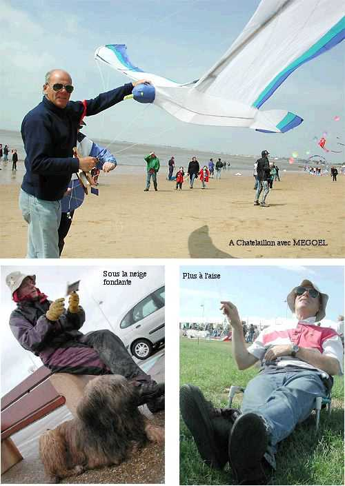

Les cerfs-volants oiseaux de Maxime
Les oiseaux vous accueillent...
Maxime Rousselle

Bonjour, me voici sur la plage de Chatelaillon avec MEGOEL, mon plus grand cerf-volant, de 8 m d'envergure (sur lequel vous trouverez des détails dans la page "Megoel" des CVs récents) sous le soleil. Mais je peux voler par toutes les conditions, comme à Dieppe au jour de l'an avec LOGOS sous la neige fondue, ou plus relax à Vierzon sur l'herbe.
Pour pratiquer, je me déplace pas mal : Dieppe et Berck, bien sûr, Chatelaillon, Cervolix, et bien d'autres, si j'en cite plus, je vais vexer ceux que j'aurais omis. Chaque année, je passe environ 65 nuits (> 2 mois !) dans mon sommaire "camping-car".
Ce site est dédié aux amateurs de cerf-volant auxquels j'ai envie de présenter mes réalisations parce que j'en suis fier bien sûr. Mais aussi pour leur fournir, en publiant les plans quand ils existent, les bases qui leur montreront qu'il est très possible de concevoir et de construire des cerfs-volants ne répondant pas aux normes habituelles, par exemple 10 fois plus larges que longs !
- J'ai d'ailleurs joint des articles que j'ai rédigés sur mes cerfs-volants (incluant leurs plans) ou plus généraux, publiés dans le Lucane (revue du CVCF) ou le journal du NCB belge.
- J'ai fin 2003 ajouté "Fêtes et Reportages" avec des reportages photos et textes de toutes mes participations.
- End of 2004, I began translating some pages into english, they can be accessed via the "English Pages" button on top of this page and some others. I also incorporated a translator which translates everything in the site into english (access also via "English Pages").
- Début 2006, j'ai remanié les rubriques pour incorporer plus de technique et faire profiter tout le monde, même les débutants, de mon expérience.
Plan du Site (Cliquez dessus ou sur le P en haut de page pour accès au détail)
Remerciements
Je remercie en particulier Eddie Kuligowski, Patrick Mouchague, Alain Keranflec'h, "BDC Henri" Christian Bécot et d'autres pour les splendides photos qu'ils m'ont généreusement offertes.
Visiteurs :